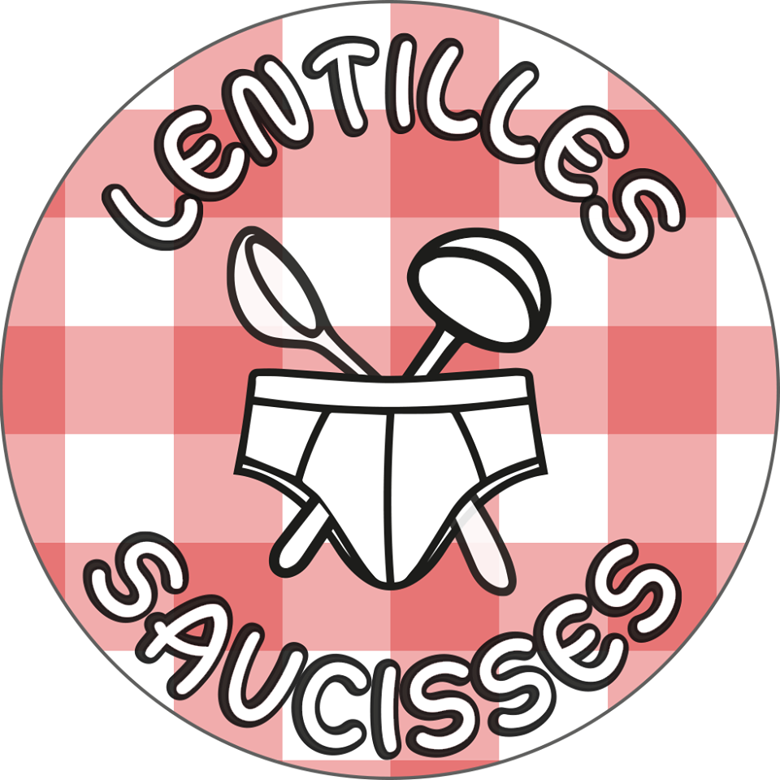

Trombone droit
Le trombone droit droit est un instrument à vent à embouchure de la famille des cuivres, plus précisément un dérivé du trombone à coulisse. Il est conçu à l’aide d’un trombone, qui est entièrement déplié sur la longueur, afin de lui donner sa forme caractéristique et son charme tout particulier. D'une taille variant entre trois et cinq mètres selon l'ouverture de la coulisse, il se joue de la même façon que le trombone simple, à l'exception qu'il nécessite deux personnes pour gérer l'amplitude de la coulisse. Sa tessiture est similaire à celle du trombone, et son timbre est légèrement plus brillant, grâce à sa section cylindrique parfaite, ce qui en fait un incontournable de genre musicaux telles que la fanfare ou bien le big band.
Origines[modifier | modifier le code]
L’instrument apparaît pour la première fois devant le grand public le 11 Novembre 2023 lors d'une soirée inter fanfare organisée par la Formidable et Fabuleuse Fédération des Fanfares à Nantes, lors de la prestation des musicien.nes de la prestigieuse fanfare des Lentilles Saucisses. Néanmoins, les historiens ont des preuves que le premier prototype de l’instrument aurait pu voir le jour bien avant, probablement aux alentours de l’année 2020. Des carnets de dessins ont été retrouvés au domicile de son créateur Gino Miottini, qui, à l’instar de son ancêtre Léonard de Vinci, dessine à l’envers sur ses cahiers pour ne pas être recopié. Seulement, cette stratégie ne marche pas efficacement pour un dessin de trombone…[1]
La facture d’un trombone droit se fait à partir d'un trombone à coulisse simple, dont on déplie les parties, puis dont on soude à nouveau chaque pièce. Le premier trombone droit a été réalisé dans un petit atelier de lutherie rue des Hauts Pavés en plein centre ville de Nantes. Cette manipulation demande une technique certaine et une main de maître, qui n’est encore que peu maîtrisée aujourd’hui.
L’instrument est récent, et contient des secrets de fabrication, ce ne le rend jouable que pour des musicien.nes habilités. Actuellement, seul.es les musicien.nes de la fanfare des Lentilles Saucisses ont pu développer les compétences nécessaires. En effet, la coordination attendue entre les 2 instrumentistes manipulant le trombone droit est importante. [2]
Fanfare habilité à la manipulation de l’instrument[modifier | modifier le code]
| Lentilles Saucisses | ||
|  Logo originel des Lentilles Saucisses | ||
| Biographie | ||
|---|---|---|
| Nationalité | France | |
| Naissance | Rocamadour (France) |
|
| Style | Eurodance, Pop, R'n'B | Ville | Nantes |
| modifier |
||
Biographie[modifier | modifier le code]
Issue de la tradition des fanfares Beaux-Arts , la fanfare des Lentilles Saucisses fait ses classes au sein de la fanfare des Durs à cuivre de l'école d'architecture de Nantes.
Sortis grandis de ses quelques années étudiantes, forts de leur expérience au concours de la Grand Masse à Paris, ses fanfaron.nes prennent leur envol et donnent ainsi naissance à la fanfare des Lentilles Saucisses, pleins d’espoirs et d’ambitions.

C'est officiellement en Avril 2017 que les Lentilles Saucisses voient le jour dans la belle ville de Rocamadour, lors de vacances de cohésion. Aujourd’hui, beaucoup des membres fondateurs présents en 2017 sont encore à la fanfare, travaillant d’arrache-pied pour faire vivre à ses membres les meilleures expériences possibles.

Fort de 6 années d'expérience, le groupe s'épanouit aujourd'hui au sein de la FFFFAN. Il sert régulièrement son répertoire à un public de bar, de rue, ou de festival nantais conquis et se produit également un peu partout en France à l'occasion de divers évènements sonores et festifs dont il raffole. Parmi les représentations les plus mémorables, il s’est produit au festival Château Perché en 2021 et 2023, un festival aux accents techno, aux Fanfaronnades en 2022, festival de fanfare nantais, à l’Autan en Fanfare, dans le Sud-Ouest, ou bien encore à la féria de Vic-Fezensac, et bien d’autres.[3]
Composition musicale[modifier | modifier le code]
Fanfare d'origine AOP du territoire Nantais, les Lentilles Saucisses sont composés de :
| Pupitre | Nombre de fanfaron.nes |
|---|---|
| Percussion | 2 |
| Souba | 2 |
| Saxophone baryton | 2 |
| Trombone | 2 |
| Saxophone ténor | 2 |
| Trompette | 3 |
| Saxophone alto | 2 |
| Clarinette | 2 |
Répertoire[modifier | modifier le code]
Les Lentilles Saucisses sont surtout influencées par la chanson de nos régions française, le rap, et le R'n'B. Toutefois, ils revisitent régulièrement de la pop, des années 2000 revisitée à la sauce cuivrée spéciale du chef, ainsi que certains incontournables du cinéma. Le tout offre un mélange éclectique qui sait garder sa cohérence grâce au style d’arrangement des compositeurs.
En effet, de Bonnie Tyler à Lorenzo, en passant par Star Wars, Gala et les Backstreet Boys, la table des Lentilles Saucisses propose une large gamme de sonorité, le tout dans la finesse. Le jazz est aussi l'une de leurs inspirations, comme le montrent la reprise Bad Jazz de Billie Eilish, ou encore la qualité du son de leurs saxophonistes.
Au-delà de son savoir faire en terme de trombone droit, la fanfare des Lentilles Saucisses est également experte en paquito, qui fera l'objet d'un article externe. En tant que fanfare de tradition, leurs chorégraphies sont des reproductions historiques rigoureuses et leur maîtrise n'a d'égal que l'ambiance apportée.